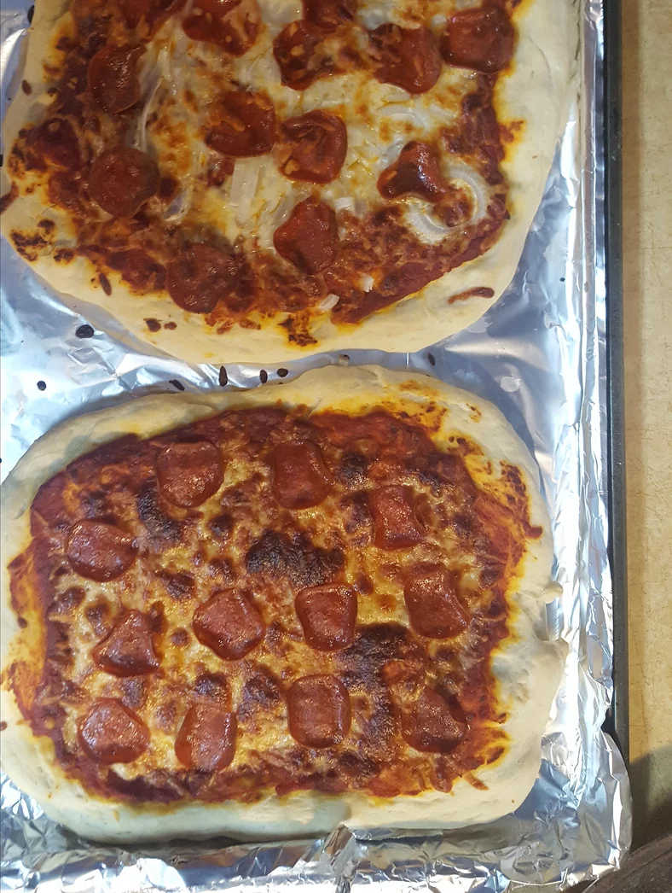

Homemade Pizza Recipe

Description
A very tasty homemade pizza dough recipe by Mike!
List of ingredients
- 1 (.25 ounce) envelope active dry yeast
- 1 cup lukewarm water
- 3 cups all-purpose flour
- ¼ teaspoon salt
- 2 tablespoons shortening
Steps to take
- In a small bowl, dissolve yeast in warm water. Let stand until creamy, about 10 minutes.
- In a large bowl, combine flour, salt and shortening. Stir in the yeast mixture. When the dough has pulled together, turn it out onto a lightly floured surface, and knead until smooth and elastic, about 8 minutes. Lightly oil a large bowl, place the dough in the bowl, and turn to coat with oil. Cover with a damp cloth, and let rise in a warm place until doubled in volume, about 45 minutes.
- Heat oil in a small saucepan over medium heat. Saute onion until tender. Stir in tomato paste and water. Season with sugar, salt, black pepper, garlic powder, basil, oregano, marjoram, cumin, chili powder and red pepper flakes. Simmer 15 to 20 minutes.
- Recipe makes 2 (12 inch) pizzas. Divide dough in half, and spread onto pizza pans. Cover with sauce, and desired toppings. Bake at 400 degrees for 20 minutes, or until crust is golden brown.